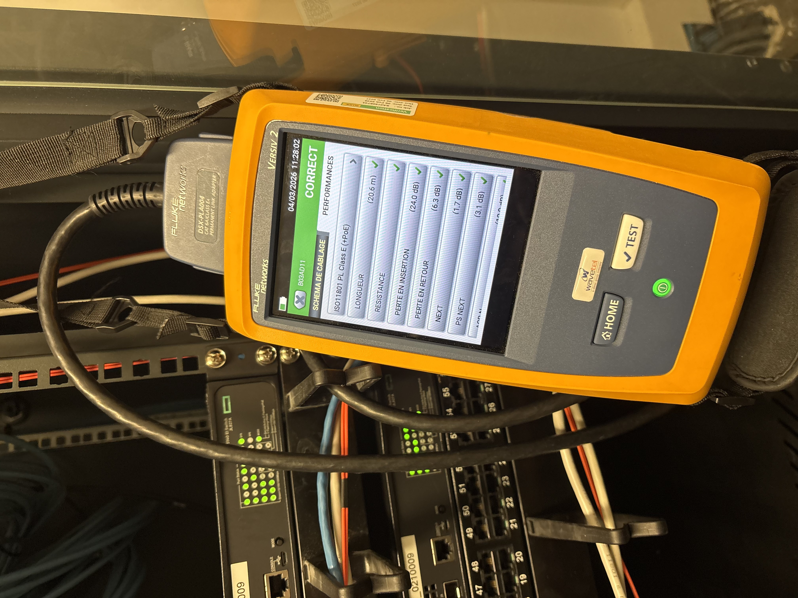

Projet 3 — Test des prises réseau avec un appareil Fluke
Participation à la vérification du fonctionnement des prises réseau à l’aide d’un testeur Fluke afin de contrôler la continuité des câbles Ethernet, la qualité des connexions et d’identifier d’éventuels défauts sur l’infrastructure réseau.
Contexte
Le bon fonctionnement du réseau informatique est essentiel pour assurer la communication entre les postes de travail, les équipements réseau et les serveurs. Afin de garantir la qualité des connexions, il est nécessaire de vérifier régulièrement l’état des prises réseau et des câbles Ethernet.
Cette mission a été réalisée en collaboration avec l’équipe SIL, ce qui m’a permis de découvrir les méthodes de contrôle et de vérification de l’infrastructure réseau.
Démarche
- Préparation du matériel de test et repérage de la prise concernée.
- Branchement du testeur Fluke sur la prise réseau à contrôler.
- Vérification de la continuité du câble Ethernet.
- Analyse du résultat affiché par l’appareil.
- Identification d’un éventuel défaut de connexion ou confirmation du bon fonctionnement.
Activités réalisées
Utilisation du testeur réseau Fluke
Objectif : contrôler le bon fonctionnement d’une prise réseau.
Action : mise en œuvre de l’appareil de test sur les prises concernées.
Résultat : obtention d’un diagnostic rapide sur l’état de la connexion réseau.
Vérification de la continuité des câbles Ethernet
Objectif : s’assurer que la liaison réseau est correcte.
Action : contrôle de la continuité des câbles à l’aide du testeur réseau.
Résultat : confirmation du bon état des connexions ou repérage d’un défaut.
Test du fonctionnement des prises réseau
Objectif : vérifier que les prises sont opérationnelles.
Action : réalisation des tests sur les prises concernées puis lecture des résultats.
Résultat : validation du bon fonctionnement des prises testées.
Identification d’éventuels problèmes de connexion
Objectif : repérer les anomalies pouvant perturber le réseau.
Action : analyse des résultats fournis par l’appareil et signalement des défauts éventuels.
Résultat : diagnostic réseau facilitant la maintenance de l’infrastructure.
Résultats
Les tests réalisés ont permis de vérifier le bon fonctionnement des installations réseau et de confirmer que les prises testées étaient opérationnelles. Cette mission a contribué à assurer une communication réseau fiable entre les différents équipements informatiques.
Preuves
Capture illustrant un test de prise réseau réalisé avec un appareil Fluke.
Test de prise réseau avec Fluke
Exemple de vérification du fonctionnement d’une prise réseau à l’aide du testeur.
